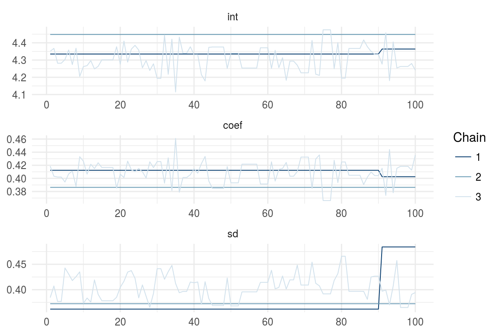

simple and scalable statistical modelling in R
simple
greta models are written right in R, so there’s no need to learn another language like BUGS or Stan
scalable
greta uses Google TensorFlow so it’s fast even on massive datasets, and runs on CPU clusters and GPUs
extensible
it’s easy to write your own R functions, modules, and even packages using greta
Here’s a Bayesian linear regression model for the iris data using greta.
x <- iris$Petal.Length
y <- iris$Sepal.Lengthlibrary(greta)
int <- normal(0, 5)
coef <- normal(0, 3)
sd <- lognormal(0, 3)
mean <- int + coef * x
distribution(y) <- normal(mean, sd)m <- model(int, coef, sd)draws <- mcmc(m, n_samples = 1000, chains = 3)
bayesplot::mcmc_trace(draws)